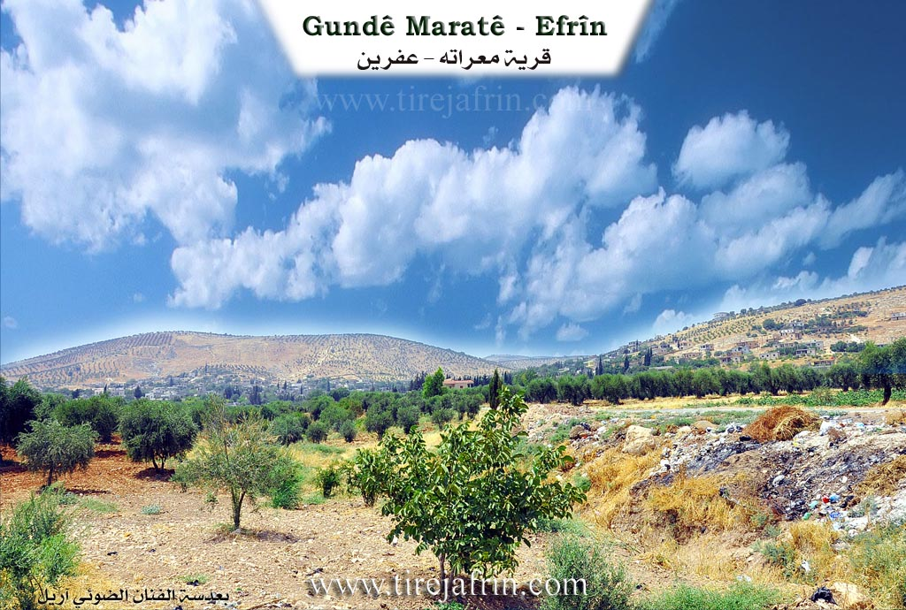
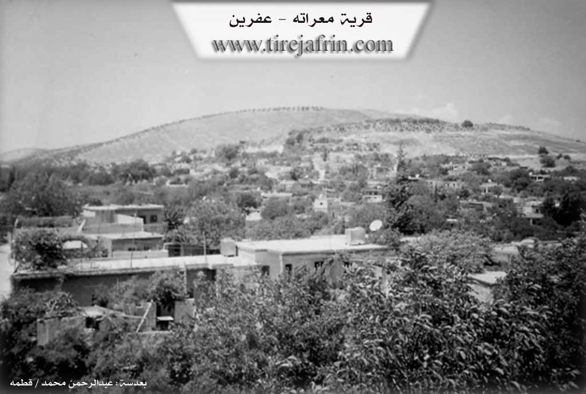

General Information
Nahiya (Subdistrict)
Efrîn
Also Known As
Ma'retê, Maratê, Me'erta, Me'ratê, معراته
Tribes
Berîk
Families, Clans, etc.
Cenciya, Cirnasa, Ehmî Zênê, Hec Elî, Henî Emîn, Mala Bêd Xidir, Mala Elî Tijo, Mala Erê, Mala Hecî 'Izzet, Mala Henan Elî, Mala Ose, Mala Reşo, Mala Çawîşler, Mala Şêx Zekeriya, Malbata Reşîd Rîbî, Malê Henî Elê, Malê Hesen Şindî, Malê Mistefayî Heydû, Malê Nehsê, Malê Walî Elqestûn, Malê Çeqelî, Meşayix, Mistê Heydo, Mistî Zikû, Omer Sefûna, Omer Sîvona, Qilîça, Reştî Kolê, Salera, Seydînê Sird, Xelûtlera, Çawîş

Photos


Basic Information about Maratê
Source: Ax û Welat
Etymology: Derived from the Roman era name Miratiyan
Foundation Date/Period: Approximately 915 years ago
Caves: Şikefta Tingê, Şikefta Ereba
Number of Caves: 100
Hills: Çelmêre
Shrines: Xidir Balî
Trees: Darê Gûlberiyê
Source: Khalil Sino
Etymology: Derived from the presence of "du şiket" (two caves) or "du derî" (two openings) at the original site
Number of Caves: 2
Wells: Bîra mala Ehmî Zênê
Summaries
I. Summary from TirejAfrin Site (English) of Maratê
Source: https://www.tirejafrin.com/site/kura%20afrin%20markaz-%20Marate.htm
It is stated in the book جبل الكرد (عفرين) دراسة جغرافية Çiyayê Kurmênc (Efrîn): A Geographical Study by د. محمد عبدو علي Dr. Mihemed Ebdo Elî: Maratê / 4671 inhabitants - 995 houses - 5km - 380m /:
Al-Asadi mentioned, citing Father Armaleh, that the name is of Aramaic origin: "Ma'rasta," meaning the Cave of the Vine.
It is a large village located on the lower slope of a mountainous height, surrounded by it from the west, north, and south. Wadi Maratê passes through it from west to east. The village spring is located in its northwestern corner, and its waters are distributed to most of its homes. It is a center for the Omer Sîvona family, which is known in Çiyayê Kurmênc.
It is stated in the book عفرين .... نهرها وروابيها الخضراء Efrîn... Her River and Her Green Hills by the writer عبدالرحمن محمد Ebdulrehman Mihemed from the village of Qetme:
Maratê is a village in Çiyayê Kurmênc, belonging to the villages of the central district and region of Efrîn, Heleb governorate. It is a very large village located on the lower slope of the limestone Mount Hecî. It is penetrated by Wadi Maratê from the northwest to the southeast, which feeds into Wadi Sêl heading east toward the Efrîn river.
It is bordered to the north by a mountainous height planted with olive trees and the village of Xelnêr; to the south by a valley planted with olive and walnut trees and the village of Babîlît; to the east by a wide, agriculturally fertile plain and the city of Efrîn directly; and to the west by a high mountain chain planted with olive trees and vines, Biyûk Edbe, Tel Xazî, and Keferdêlê Jêrîn.
Its lands are mountainous, plain, and agricultural. The number of its houses is approximately 600, and its age is 700 years. Its dwellings are of stone and mud with wooden roofs, though currently, modern cement and stone dwellings have overwhelmed it and started spreading from the eastern side. An electricity network is available, as well as drinking water from the well and the spring located in the village. It contains a primary and preparatory school. A municipality building, a telephone center, and a modern mosque have been established in it. An asphalt road reaches the center of the village and the city of Efrîn.
The residents work in rain-fed agriculture on an area of 965 hectares (grains, legumes, olive trees, walnuts, and pomegranates) and extensively in irrigated agriculture from artesian wells, where they also grow summer vegetables. They also raise sheep and goats. There are three modern olive presses in the village. It is one of the old villages in the region.
Among the holders of higher degrees in the village:
Celal Begdaş / PhD in Archaeology / Germany.
Idrîs Xelîl Mihemed / PhD in Food Industries / Under completion / Germany.
Village Mukhtar: Elî Cawîş Mihemed.
Preparation and Execution:
Manager of Tirej Efrîn site: Ebdulrehman Hacî Osman
20/12/2013
Sources
Book: جبل الكرد (عفرين) دراسة جغرافية Çiyayê Kurmênc (Efrîn): A Geographical Study by د. محمد عبدو علي Dr. Mihemed Ebdo Elî.
Book: عفرين .... نهرها وروابيها الخضراء Efrîn... Her River and Her Green Hills by عبدالرحمن محمد Ebdulrehman Mihemed.
II. Summary of Maratê from Afrin Zeyton
Source: https://www.youtube.com/watch?v=0cTNrtYja4M
The village of Maratê, located approximately 5 kilometers from the city of Afrin, carries a history deeply rooted in antiquity. The name itself is the subject of two prevailing theories: historical texts suggest it derives from a Syriac word meaning "the cave," while local oral tradition attributes it to a Roman ruler named Maratinus who once governed the area. The village's deep historical footprint was previously attested to by an inscribed rock located in Şikefta Ereban (Cave of the Arabs), which dated the settlement to at least 720 years ago, though this artifact has been lost for decades. Elders believe the village is much older, pointing to ancient dwellings and nearby archaeological sites like Qaziqlê and Xilnêr.
Maratê played a significant role in the regional resistance against colonial powers. During the Great Syrian Revolt, the nationalist leader Ibrahim Hananu visited the village to coordinate with the revolutionaries of Afrin. The village is geographically defined by its position on the slopes of two facing mountains and its proximity to Galyê Kûr (The Deep Valley). It was historically renowned for its abundant water sources, specifically Kaniya Mezin (The Big Spring). Elders recall when this spring produced enough water to irrigate the village's once-famous pomegranate orchards and flow all the way to Afrin city. However, over the years, the water levels have drastically diminished, and the agricultural focus has shifted primarily to olive cultivation.
The social fabric of Maratê began with three primary households: Mala Henan Elî, Mala Bêd Xidir, and Mala Erê. Over time, the population expanded, and the village is now home to various lineages, including members of the Berîk tribe. Notable historical residences include the homes of Şêx Zekeriya and Hecî 'Izzet. The village is also culturally distinguished by the Mala Çawîşler family, known for their musical heritage, and the Malbata Reşîd Rîbî, known for traditional dance. Residents like Şiyar Mihemed Şêxo actively preserve this heritage by collecting agricultural tools and household artifacts to ensure the "turas" (heritage) of their ancestors is not lost.
Spiritual and natural landmarks anchor the village's identity. A massive oak tree known as Darê Gelberiyê stands in the village; it is estimated to be centuries old and is so thick that it requires several men to encircle it. The village also contains Ziyareta Xidir Êlyasî, a sacred site associated with Xidir Êlyas. In times of drought, villagers would gather there on Fridays to sacrifice animals and pray for rain, a ritual that elders recall bringing immediate relief from the skies. Historically, the village utilized caves not only for shelter but for industry, with ancient olive presses installed directly inside them.
II. Summary of Maratê from Ax û Welat
Source: https://www.youtube.com/watch?v=TnKcW8LAymA
The village of Maratê, located five kilometers from Efrîn, is a historic settlement with origins tracing back approximately 915 years. According to local oral history and an inscription found in a nearby cave, the village was known in the Roman era as Miratiyan before the name evolved into its current form. The village was founded by seven original households, including Malê Henî Elê, Seydînê Sird, Malê Walî Elqestûn, and Malê Hesen Şindî. These early inhabitants were originally Êzîdî migrants from Şengal who practiced Zoroastrianism before eventually converting to Islam over the centuries. Following the founding families, other lineages such as Cenciya, Qilîça, Cirnasa, and Meşayix arrived, settling in the village where they now live as a cohesive community.
The spiritual life of Maratê centers on the ancient shrine of Xidir Balî, also known as Xizir Îlyas. Although the villagers are now Muslim, they maintain practices tied to this site that date back to their Êzîdî ancestors. Villagers light fires at the site nightly and tie fabrics to a sacred tree to ask Xidir Balî for intercession, particularly for fertility or relief from calamities. In times of drought, the community traditionally gathered there to sacrifice animals and pray for rain.
The landscape around Maratê is defined by its rugged terrain and numerous caves, with elders estimating there are 100 caves in the area. The most famous is Şikefta Tingê, named for the ringing sound (tingînî) that echoes within its 40 meter length. Another significant site is Şikefta Ereba, located near a large spring and an ancient tree known as Darê Gûlberiyê. A historical account provided by Elî Çawîş details how Armenian visitors once identified a stone with Latin inscriptions near this cave which dated the village's founding, though the stone was stolen shortly after its discovery.
Nearby, a mountainous area known as Çelmêre serves as a historical symbol of resistance. The name translates to "Forty Men," referring to a legend of forty warriors who defended the heights. Historically, when the plains of Efrîn were attacked, the villagers would retreat to the rough terrain of Çelmêre for safety. The village is also home to cultural preservationists like Birê Şiyar, who maintains a museum of agricultural tools and antiques to ensure the heritage of the ancestors is not lost, and Ebdulrewûf, a dengbêj who preserves oral history through songs about figures like Şêx Seîd.
II. Summary of Maratê from Khalil Sino
Source: https://www.youtube.com/watch?v=l4a1z6FA5Tw
The village of Maratê, located approximately seven kilometers from the city of Efrîn, traces its origins to a settlement defined by geological features. According to the elder Fewzî Bavê Evdo, the name Maratê is rooted in the existence of "du şiket" (two caves) or "du derî" (two openings) that existed at the village's inception. The history of the settlement is described as ancient, dating back to an era when the community consisted of only four households, with the population split between living in houses and inhabiting the caves. Over generations, Maratê has expanded significantly from these humble beginnings to include over 600 households today.
The social history of Maratê is deeply tied to its water sources and agricultural cooperation. In the past, the community relied on communal springs. A notable historical figure, Mistê Heydo, is remembered for his efforts in clearing a blocked spring, which restored water flow to the village and allowed residents to irrigate their gardens in shifts. However, as noted by residents like Ebdulreûf Çawîş, environmental changes and drought have caused these traditional springs to dry up. The villagers shifted reliance to wells, such as the well of the Ehmî Zênê family (Bîra mala Ehmî Zênê), which served as a crucial water source when others failed. Today, most residents have drilled private wells or rely on water delivery, marking a shift from the communal resource management of the past.
Culturally, the village maintains a connection to its agrarian roots through the memories of its elders. Ehmed Bavê Şiyar, a craftsman and retired driver, preserves the village's heritage by building models of traditional tools that were once essential to daily life, such as the cercer (threshing sled) and dastar (hand mill). Religious life in the village centers around a mosque founded by a teacher named Şêxûs, who established the site to ensure religious education for the community. Despite the village's growth, residents lament the loss of the close-knit social bonds that characterized the era of their ancestors, noting that economic hardship and modernization have altered the traditional lifestyle of Maratê.
Transcriptions and Subtitles
| Source | Video | Subtitles | Transcript |
|---|---|---|---|
| Ax û Welat 1 | Watch Video | Download SRT | View Transcript |
| Khalil Sino 1 | Watch Video | Download SRT | View Transcript |
| Afrin Zeyton 1 | Watch Video | Download SRT | View Transcript |
Foundation/Origin Information of Maratê
It is a center for the family of Omar Safouna.
Source: TirejAfrin Site
First settled by seven Yazidi families who lived within the village's network of roughly 100 caves.
Source: Ax û Walat Transcript
Descends from founding families like Malê Hanan Elî and Malê Beyt Xidir. The village played a significant role in the Great Syrian Revolution, hosting Ibrahim Hanano who came to coordinate with local Afrin rebels.
Source: Afrin Zeyton Transcript
Possible Village Name Meaning of Maratê
From Aramaic: Ma'rasat: the vineyard cave.
Source: TirejAfrin Site
Originally known as Mîrîtiyan because local rulers governed from its network of caves.
Source: Ax û Walat Transcript
Believed to be either Syriac for "The Cave" or derived from the Roman ruler Miritian.
Source: Afrin Zeyton Transcript
V. Links
- Tirej Afrin:
https://www.tirejafrin.com/site/kura%20afrin%20markaz-%20Marate.htm - Ax û Welat:
https://www.youtube.com/watch?v=TnKcW8LAymA - Jawlat:
https://www.youtube.com/watch?v=Aso1PlCPYB4 - Link:
https://www.youtube.com/watch?v=BF-Uxyamr-A - Local FB page:
https://www.facebook.com/gundemarate - Drone video:
https://www.youtube.com/watch?v=DsMBmMRbBsA - Link:
https://www.youtube.com/watch?v=w8nPOg-0EVw - Link:
https://www.youtube.com/watch?v=ZTGPFr3WXcc - Video:
https://www.youtube.com/watch?v=LYNa4o020RI - Link:
https://www.youtube.com/watch?v=Yw4xTc7eZIk - Link:
https://www.youtube.com/watch?v=zQl5BrV-hPA - Link:
https://www.youtube.com/watch?v=wi5kdO0tsCo - Link:
https://www.youtube.com/watch?v=PmHEl1KwLKE - Link:
https://www.youtube.com/watch?v=djObbmK4QCE - Link:
https://www.youtube.com/watch?v=TXQR1PFGnYQ - Link:
https://www.youtube.com/watch?v=bGwKQPsk4W4 - Link:
https://www.youtube.com/watch?v=tQBy3RZtYWc - Link:
https://www.youtube.com/watch?v=T1nE9gaLzdU - Link:
https://www.youtube.com/watch?v=aJPmEhqfkNQ - Khalil Sino:
https://www.youtube.com/watch?v=l4a1z6FA5Tw